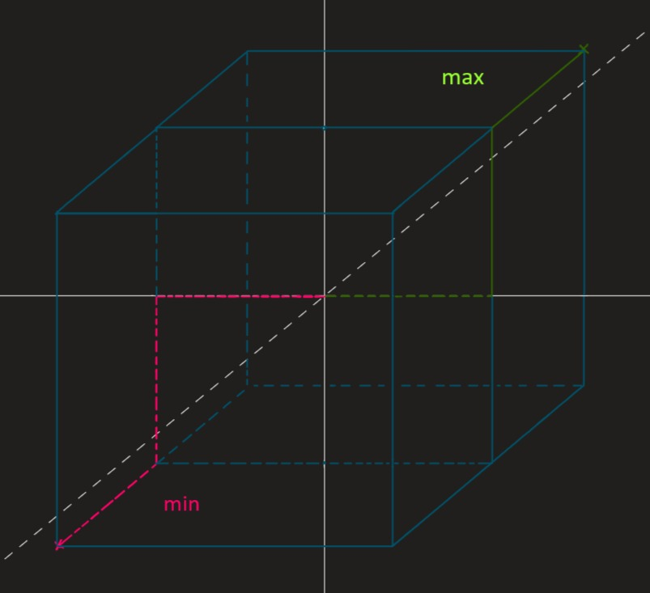
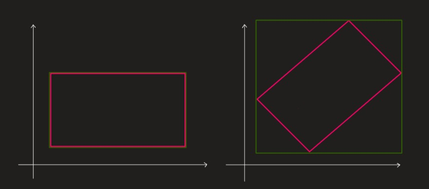
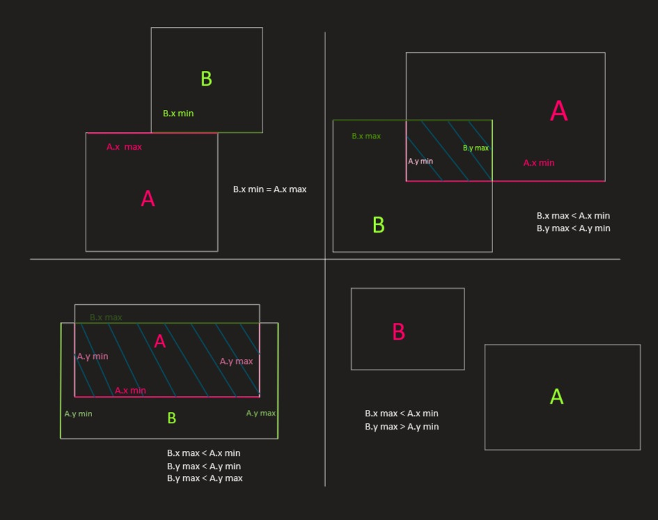
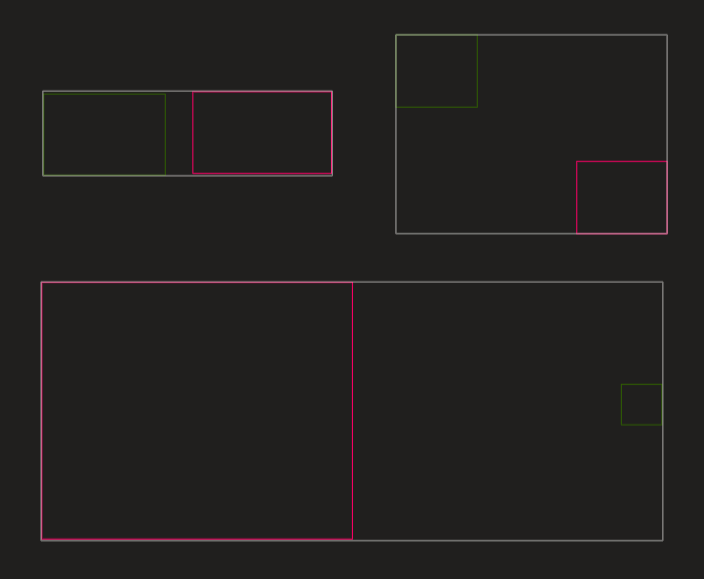
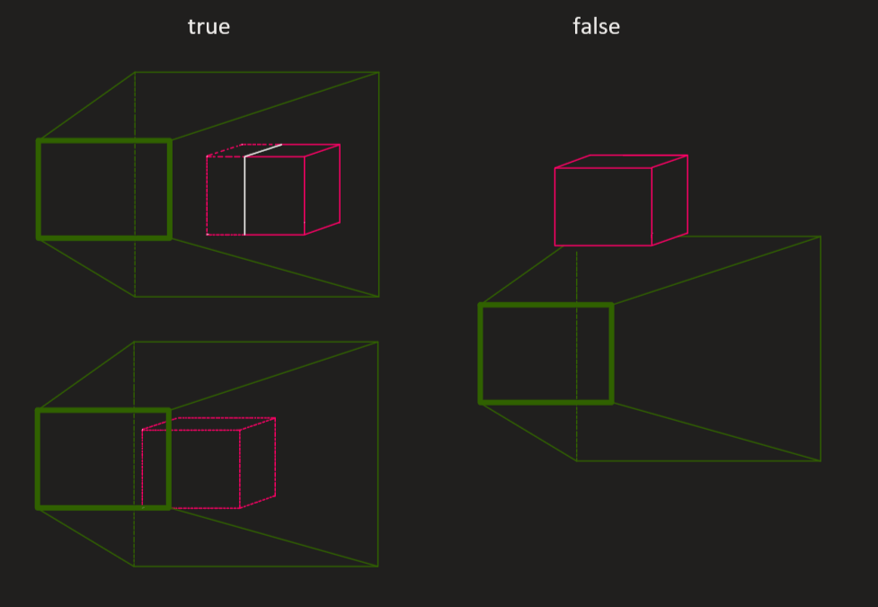
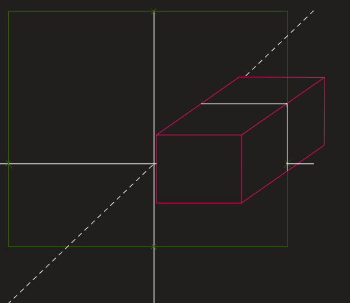

AABBf
Work in progress
The Axis-Aligned Bounding Box (float) is an efficient tool for collision detection. A Bounding Box forms itself out of the minimal and the maximal x, y, z coordinates of an object. The min and max values of a cube in the center of a scene may look like this:
min = (-1, -1, -1);
max = (1, 1, 1);
A Bounding Box draws a cuboid as tightly as possible around the targeted object. A sphere with radius 1 would have the same Bounding Box as the cube in the example above.

The Axis-Aligned Bounding Box is as the name suggests "axis-aligned", which means the Bounding Boxes are not able to rotate and if its object rotates the AABB has to be recalculated and may end up in a bad approximation of its former shape. Therefore the AABB is most useful when the objects principal axes are roughly aligned with the scenes coordinate system.

When two Bounding Boxes are tested for a collision, the minimum values of one box are compared to the maximum of the other and vice versa (A.min.y & B.max.y,..., A.max.z & B.min.z,...). So if a minimum value is greater than a maximum value / a maximum value is lesser than a minimum value, a collision occurs.
Components
For an overview of the components [https://fusee3d.org/api/Fusee.Math.Core.AABBf.html.](click here to visit the API documentation).
Building your own Bounding Box
You can use the constructor 'AABBf' to build your own Bounding Box:
_min = new float3(-1, -1, -1);
_max = new float3(1, 1, 1):
AABBf bb1 = new AABBf
(
_min,
_max
);
There is also a way to get the Bounding Box of an Asset or Object in the scene:
private Transform SphereTrans;
private Mesh SphereMesh;
SphereMesh = Scene.Children.FindNodes(node =>node.Name == "Sphere")?.FirstOrDefault()?.GetMesh();
bb2 = SphereMesh.BoundingBox;
If (at least) one of your objects moves you can multiplicate it with the Matrix of the moving Object:
AABBf movingBb = bb2 * SphereTrans.Matrix();
Now if you want to check for a collision between these two Bounding Boxes, you can use the Intersect Method:
if(bb1.Intersects(bb2))
{
Console.WriteLine("Oh? You're intersecting me?");
}
You can use the same method for checking if a Bounding Box collides with a specific point or coordinate in the scene:
float3 point = new float(1, 2, 3);
if(bb1.Intersects(point))
{
Console.WriteLine("We hit 'im, boys");
}
Checking different bounding box collisions

Maybe you want to draw one Bounding box around two existing objects:
AABBf twoGether4ever = AABBf.Union(bb1, bb2);
Examples for a Bounding Box being drawn around two pre-existing ones

Sometimes you may want to know if an object enters the visible area of your scene:
Frustum frustum = new Frustum();
frustum.CalculateFrustumPlanes(RC.View);
if(bb1.InsideOrIntersectingFrustum(frustum) == true)
{
StartDoingSomething();
}

You can do the same for just one direction (or with any plane in general):
PlaneF planeLeft = new PlaneF();
if(bb1.InsideOrIntersectingPlane(planeLeft))
{
if(planeLeft.SignedDistanceFromPoint(bb1.Center) <= 0)
{
Console.WriteLine("Hello");
}
else
{
Console.WriteLine("Byee");
}
};
Plane Intersection
